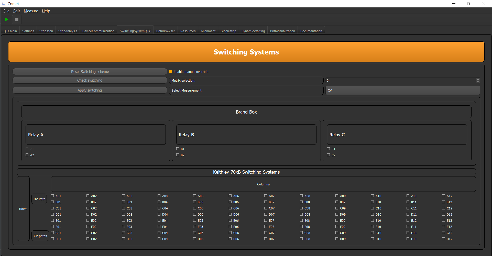

Switching Matrix Control¶
This GUI plugin is a more specific one since it is designed to work with the Setups QTC and PQC at HEPHY Vienna. If these terms means nothing to you, you can skip this part of the tutorial.
For all others: With this GUI you can manually apply any switching state you want. Either by pre defined switching commands or by manually choosen switching commands.
The GUI looks like:
The buttons should be self explanatory. With the radio button you can activate maunal switching in which you can click on the nodes below, which you want to switch. The Matrix selection spin box is for selection on how many Keithley 70xB switching systems are connected, and which one you want to see in the GUI. The Select Measurements combo box gives you a list of possible pre-defined measurement switchings you can choose from.
If you have the switching you want, by either manually switching selection or pre-defined ones, just hit the Apply switching button and the framework will apply the switching.
Note
To tell the program how many Keithley 70xB switching there are, the config of your device in the settings.yml file need to have the parameter Cards: x. Where x is the number of connected cards.
Important
If you want to know how to configure pre-defined switching order, please see chapter Switching System Control Class